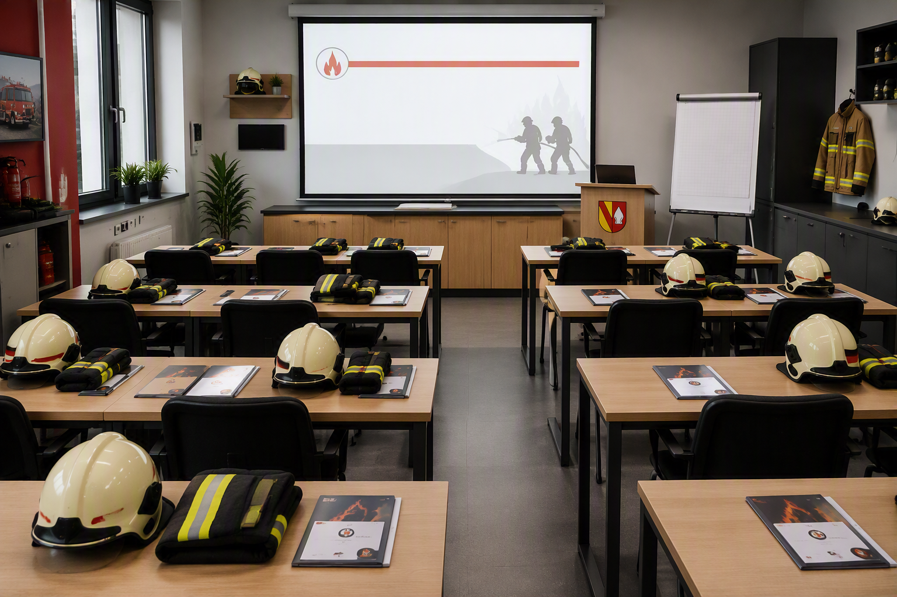

A
Probenart auswählen
Bei einer allgemeinen Probe werden Mitglied und Funktion ausgewählt.
Bei einer allgemeinen Probe werden Mitglied und Funktion ausgewählt.
Personen markieren und anschließend die Auswahl übernehmen.
Nicht gewähltVerfügbare Funktion antippen und anschließend speichern.
Übersicht
Wähle einen Bereich. Jeder Bereich öffnet eine eigene Unterseite.
Mitglieder, Funktionen und Fahrzeugberechtigungen verwalten.
Jährliche Mindestziele für die einzelnen Funktionen festlegen.
Die Admin-PIN für geschützte Bereiche ändern.
Teilnahmen und Funktionen auswerten.
Abgeschlossene Proben nach Jahr und Monat aufrufen.
PDF-Speicherort und vollständige Sicherungen verwalten.
Geschützter Bereich
Bitte Admin-PIN eingeben.
Falsche PIN.
Konfiguration
Laufende Probe zurücksetzen und Verwaltungsaktionen ausführen.
Live-Übersicht der aktuellen Probe. Zur Teilnehmeransicht gelangst du über „Start“ in der oberen Leiste.
Jährliche Mindestziele zentral einstellen.
Lege fest, wie oft jede freigegebene Funktion pro Mitglied und Kalenderjahr mindestens übernommen werden soll. Der Wert 0 deaktiviert das Ziel.
CSV-Speicherort und Admin-PIN verwalten.
Wähle den Ordner, in dem die CSV-Auswertungen gespeichert werden sollen.
Standard-PIN bei der ersten Verwendung: 112
Mitglieder anlegen und persönliche Berechtigungen verwalten.
Besetzungsempfehlung
Noch keine anwesenden Teilnehmenden erfasst.
Manuelle Anpassung: Namen per Drag & Drop zwischen LF10, TSF und „Weitere Anwesende“ verschieben oder miteinander tauschen.
Noch keine taktische Einheit
Noch keine taktische Einheit
Keine weiteren anwesenden Personen.
Wenn keine vollständige Staffel oder Gruppe gebildet werden kann, kann die Probe als Sonderprobe oder als Unterricht abgeschlossen werden.
Praktische Ausbildung, zum Beispiel Funkübung, Gerätekunde oder Knoten und Stiche.

Theoretische Ausbildung im Unterrichtsraum.
Besetzung prüfen. Erst danach wird die Probe abgeschlossen und CSV sowie PDF werden ausgegeben.
Auswertung
Noch keine abgeschlossenen Proben vorhanden.
Getrennte Auswertung, ohne Einfluss auf die Statistik der aktiven Einsatzabteilung.
Noch keine Mitglieder der Altersmannschaft vorhanden.
Noch keine abgeschlossenen Proben vorhanden.
Noch keine Daten für das aktuelle Jahr vorhanden.
Noch keine auswertbaren Proben vorhanden.
Teilnehmer
–
Für dieses Mitglied sind keine Jahresziele eingestellt.
Noch keine Funktionen im laufenden Jahr erfasst.
Noch keine Proben im laufenden Jahr erfasst.
Noch keine Teilnahmen im laufenden Jahr erfasst.
Datengrundlage: abgeschlossene CSV-Dateien im lokalen Archiv dieses Browsers.
Alle eingestellten Funktionsziele sind erreicht.
Geschützter Bereich
Bitte denselben Admin-PIN eingeben.
Falsche PIN.
Datensicherung
Abgeschlossene CSV-Dateien und Sicherungen zentral verwalten.
Die letzten 30 erfolgreichen Exporte werden lokal gespeichert.
Sichert Mitglieder, persönliche Funktionsfreigaben, Altersabteilung, LF/TSF, Funktionsauswahl, Jahresziele, Admin-PIN, laufende Tagesdaten und das CSV-Archiv.
Kein Backup-Ordner ausgewählt
Backups werden bevorzugt direkt in diesem Ordner gespeichert. Falls das nicht möglich ist, öffnet sich Teilen oder Download.
Die JSON-Datei kann auf dem iPad über den Teilen-Dialog direkt in OneDrive gesichert werden.
Noch keine CSV-Datei archiviert.
Abgeschlossene Proben
Probenberichte nach Jahr und Datum sortiert.
Wähle die Berichtsdateien aus dem gemeinsamen OneDrive-Ordner. CSV-Dateien ergänzen Historie und Statistik; gleichnamige PDF-Dateien werden dem Bericht zugeordnet.
Bereits vorhandene CSV-Berichte werden übersprungen. PDF-Dateien ohne passende CSV werden nicht als eigener Historieneintrag angelegt.
PDF-Berichte nach Kalenderjahr und Monat öffnen.
Noch keine abgeschlossenen Proben vorhanden.
Benutzerhandbuch
Die kompakt gegliederte Hilfe beschreibt die aktuellen Funktionen für Anwesenheit, Taktik, Administration, Archiv, Backups, Statistik sowie CSV- und PDF-Ausgabe.
Nach der Statusauswahl erscheint die Personenliste. Mehrere Personen können markiert werden. Direkt unter der Liste befindet sich der sichtbare Button „Auswahl übernehmen“. Erst dieser Button speichert die markierte Gruppe. Danach verschwinden die gespeicherten Personen aus der offenen Auswahl. „Status ändern“ führt zurück zur Statusauswahl; bereits gespeicherte Personen bleiben gesperrt und werden nicht erneut angeboten. Personen mit Organisationsstatus werden rechts als „Organisation“ angezeigt. In der CSV steht „Organisation“ in der Spalte „Funktion / Status“, im PDF in der Spalte „Funktion“. Beim Taktikabschluss bleibt die Funktion Organisation unverändert und wird nicht mehr zu Reserve überschrieben.
Das LF10 wird zuerst von der taktischen Einheit 1/3 über die Staffel 1/5 bis zur Gruppe 1/8 gefüllt. Erst danach kann das TSF aus übrigen Kräften gebildet werden. Sobald eine Besetzung angezeigt wurde, bleibt sie beim Wechsel zurück zu Home bestehen. Nachzügler werden ausschließlich auf noch freie, passende Positionen gesetzt. Bereits zugeteilte Personen wechseln weder ihre Funktion noch das Fahrzeug. Dadurch kann eine später ergänzte WTM-fähige Person den freien WTM-Platz besetzen, ohne einen Maschinisten oder eine andere Kraft umzusetzen.
Der frühere separate Funktionsschalter „Maschinist“ entfällt. LF10, TSF oder beide Fahrzeuge werden direkt unter „Maschinistenberechtigung“ gewählt. Mindestens eine Fahrzeugauswahl schaltet die Person automatisch intern als Maschinist frei.
„Probe abschließen · CSV + PDF“ erzeugt beide Dateien. Die PDF-Tabelle verwendet schwarze Schrift und kräftige Grau-Blau-Töne. Nicht zugeteilte anwesende Personen werden als Reserve gespeichert.
Die Administration enthält Probe zurücksetzen, Einstellungen und Funktionsziele, Daten & Sicherheit sowie Mitglieder. Die Auswahl der Probenart befindet sich ausschließlich auf Home.
„Archiv & Backups“ ist mit demselben Admin-PIN geschützt. Unter „Speicherort für Backups“ kann ein eigener Ordner für JSON-Sicherungen ausgewählt werden. Komplett-Backup und CSV-Archiv-Backup werden bevorzugt direkt dort gespeichert. Ist die Ordnerauswahl im Browser nicht verfügbar oder fehlt die Berechtigung, verwendet die Anwendung weiterhin den Teilen- oder Download-Dialog.
Die Statistik trennt aktive Einsatzabteilung und Altersmannschaft vollständig. Mitglieder und Teilnahmen der Altersmannschaft werden nur in der eigenen Statistik ausgewertet und nicht zur Mannschaftsstärke, Anwesenheitsquote, Durchschnittsanwesenheit, Funktionsverteilung oder zu den Funktionszielen der aktiven Einsatzabteilung gezählt. Nach einem Update die Webseite vollständig neu laden, damit der neue Offline-Cache aktiv wird.